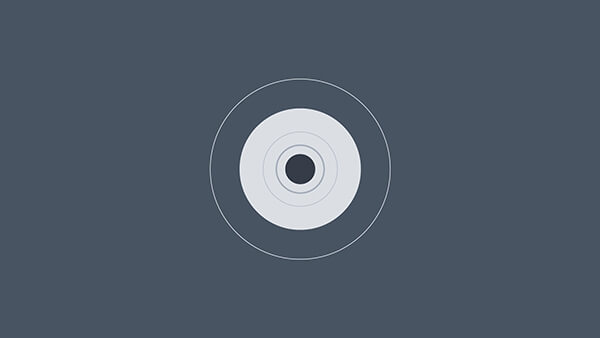
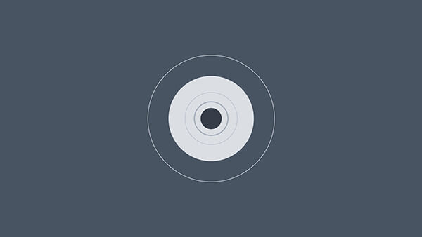

Storyboard & Animatic
As the new service can cover a broad spectrum of audience, I chose to translate the story into a visual metaphor that represents concepts and ideas.
This way, instead of depicting one specific example case, I believed it could establish a higher level of generality which can keep the audience from taking their interpretation of the story too narrowly.
This direction led to illustrating the scenes in an abstract way using simple shapes which combined together speak for the elements of the story.

 
